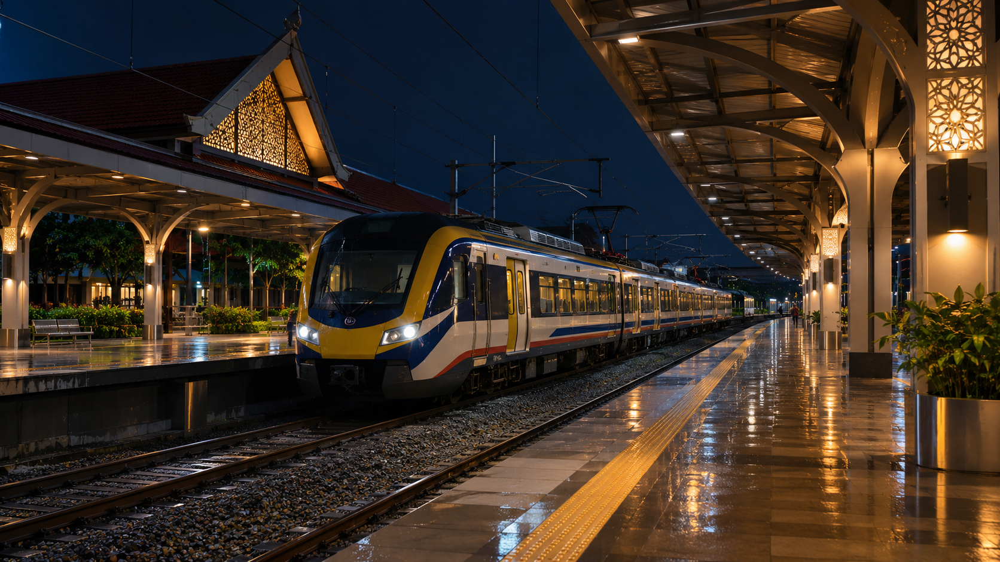
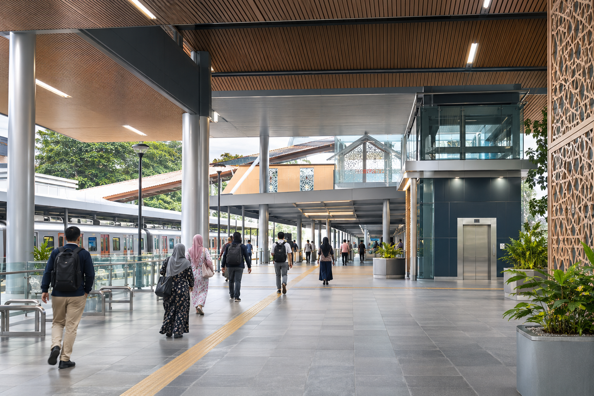
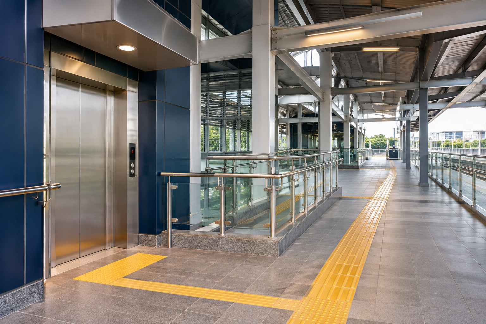
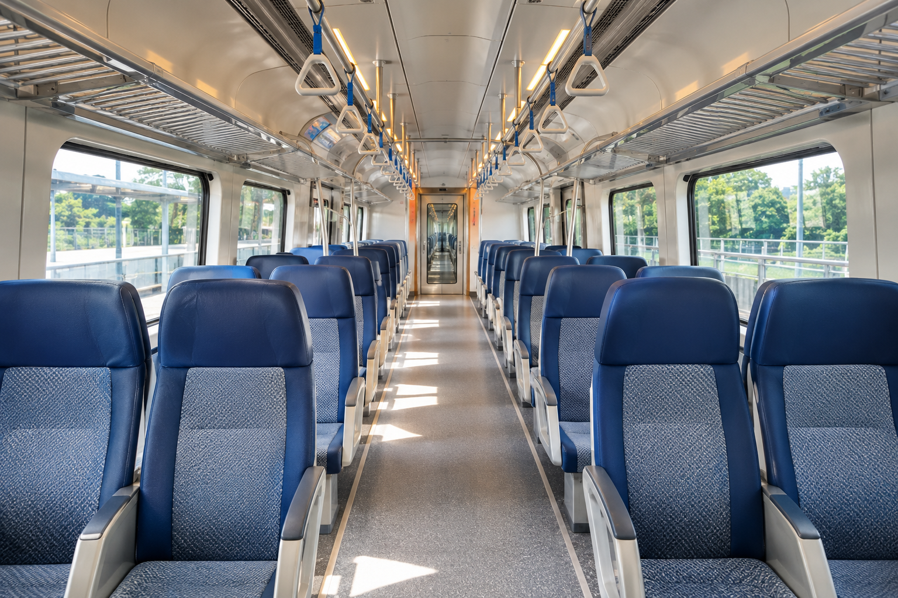

Night-time track renewal on the Seremban Line
Engineering teams replaced 1.2 km of rail near Kepong over three weekends, cutting journey noise and shortening the signal-check delay that affected early services.
Published 2 November 2026
The following original articles and images are retained as student-project sample content, not verified railway operational notices.
Newsroom
Network upgrades, accessibility work and service notices from the Belang Rail team.

Engineering teams replaced 1.2 km of rail near Kepong over three weekends, cutting journey noise and shortening the signal-check delay that affected early services.
Published 2 November 2026

The KL Sentral lift has completed scheduled maintenance. Step-free access is restored from the concourse to Platforms 3 and 4.

Every route page lists each station's facilities, such as lifts and toilets, so you can plan a step-free journey before you travel. Browse routes or ask our team.

The Port Klang Line has moved to six-car sets at peak times, increasing capacity for commuters.
Optional railway video; internet access is needed only to play this embed. The passenger board uses staff-managed database records.
The recorded announcement used for the arrival chime.
The platform displays pulse gently when a train is marked as arriving by staff.